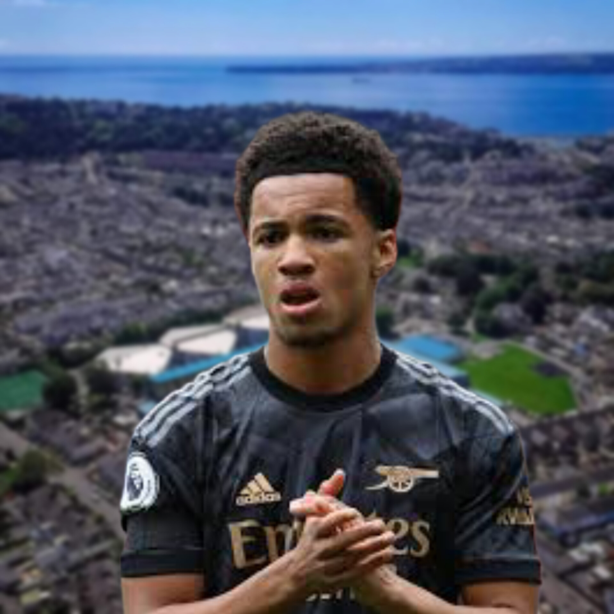
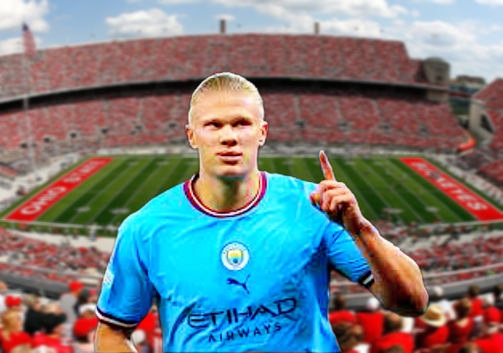
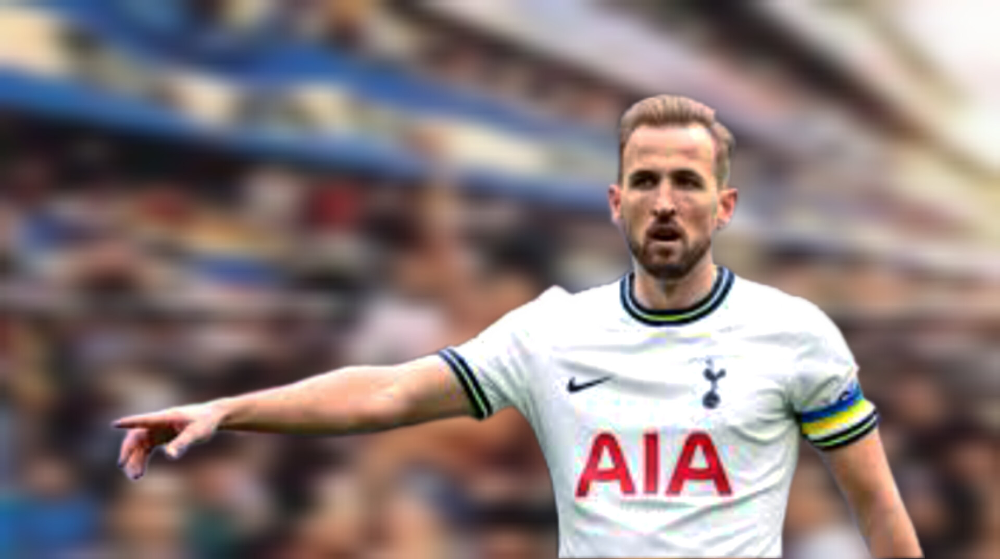
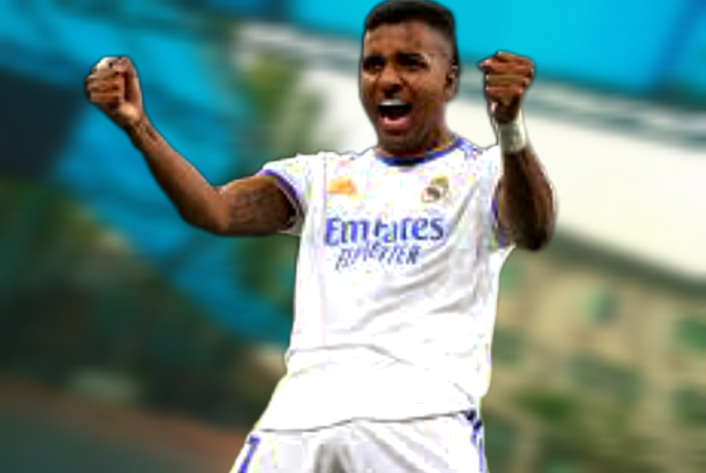
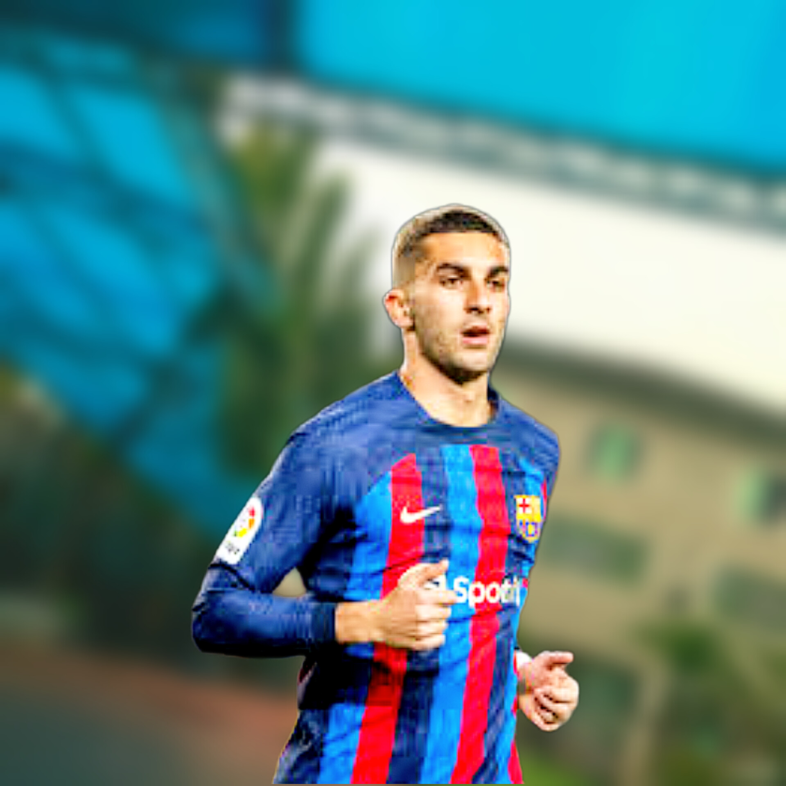

Youngest debutants in the top Europian leagues
Career Footballing has increasinly become the proffession for many young stars today. Some people who have interest in footballing, develop the career by undergoing many criterias while some
people manifest such talents naturally. proffessional football has no specified or rather does it have any required age for participation approval, it only requires experience, stamina and other
determinants which are best tackled by the individual player. While these determinants seems impossible for some people, it also seem really simple for some others hence triggering their pursuit
of footballing career at a very young age. Many others who love footballing but don't have what it takes to become a proffessional footballer joins organisations like sports schools and team accademies
to be coached by experts in the field. This process might delay but it is still an effective means of achieving career ambition as a proffessional footballer.
In this article we will discussing some proffessional footballers who started their career at a very young age.
Ethan Nwaneri:
Ethan Nwaneri, an Arsenal mid-fielder who played for Arsenal under 18 at the age of 14. He made his proffessional debut for Arsenal senior Team at the age of 15 becoming the youngest player to play in a premier league team. He played his first premier league match against Brentford when he came off bench to replace fabio Vieirain in the late minutes of the game.
Lamine Yamal:

Lamine Yamal created a laliga record on his debut match for barcelona against Real betis and featured in the barcelona's 4:0 victory against Betis. He is just 15 years old when Xavi called him from the academy as one of the most successful youngstars. He came off the bench to replace Gavi in the 83rd minute of the match. He became the youngest player to ever feature in barcelona's senior team.
Erling Haaland Braut:
The manchester city and Norwegian striker started his career at a very young age following his abilities to finish the ball and also his goal sense. Erling Haaland was born the year 2000 and he started off his career in an academy in Norway when he was just 5 years old. He is considered a very successful and one of the most wanted strikers in the world. He made his proffessional debute match for bryne Reserve in 2015 when he was just 15 years old from where he progressed to Bryne and to molde reserve. Since then, Haaland has never failed to create and break records in the football world.
Harry Kane:
One of the most successful and record creating english players(Harry Kane) started off his proffessional footballing career pursuit at a very young age. He was born in 1993 in England. Kane has spent his entire career in England starting from 1999, when he joined Ridge way Rovers as an amateur player to now, when he currently play for Tottenham Hotspur. Kane had his debut match for Tottenham Hotspur in 2009 when he was just 16 years old. He never failed to provide good records for the team.
Rodrygo:
The 2001 Brazilian born Real Madrid forward or winger is yet another proffessional footballer who started off his career at a very young age. He joined the Santos FC for junior section or academy in 2011 when he was 9 years old. Rodrygo made his official proffessional debut for santos FC senior team in 2017 when he was 16 years old and he played 2 years later for santos FC before been signed by Real Madrid in 2019 where he plays till date. He also plays for the Brazilian national team.
Ferran Torres:
Torres is a Spanish proffessional footballer who currrently play for Barcelona and the spain national team. He was born on february 2000 in spain. He joined Valencia in 2006 where he started his amateur career. He played for about a decade with the valencia youth team before joining Valencia Mestalla where he made his proffessional debut in 2016 when he was only 16 years old. he futhered his career with the valencia senior team in 2017 before leaving spain for English league in 2020 when he joined Manchester city. He went back to spain to continue with Barcelona senior team in 2022.